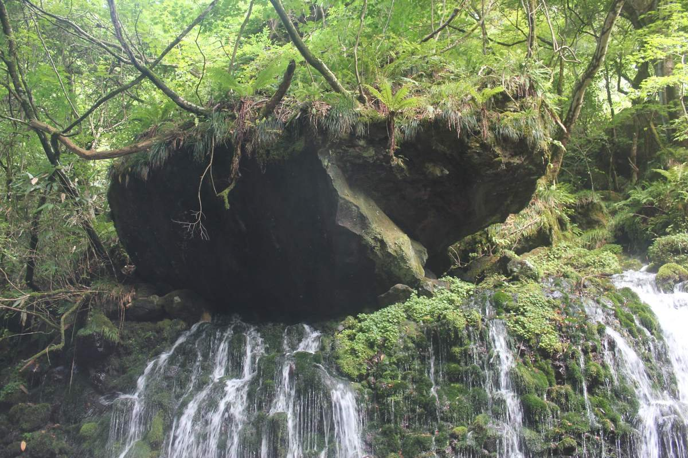

03
Story & Land
物語「九十九の礫」と、山体崩壊の記録
部屋の番号も色も糸も、一つの物語と、土地の記録から決めている。
あらすじ 創作
むかし、お山（鳥海山）はいまよりずっと背が高く、すぐそばの海に一度もさわったことがなかった。お山は自分の言葉を水に溶かし、地の底をくぐらせて浜の湧き水へ送っていた。その言葉を聞きとれたのは、湧き水のそばの貝と、浜で貝を掘る娘キサだけだった。
お山の願いは「ただ一度でいいから、海にさわってみたい」。ある雪の多い年の夜、お山は北の肩を自ら崩し、岩と土と森が海へ駆け下りた。夜が明けると、海には数えきれない小さな島が浮かんでいた。島を数えはじめたキサは、九十九まで数えたところで、それ以上数えられなくなった。
海は礫を抱いて浅い潟をつくった。お山と海のあいだには「いつか返してほしい」という約束があったという。二千三百年ののち、大地が揺れて潟の水が消え、島々は乾いた泥の上に残された。いま島々は、田んぼの中に小さな森を載せた小山として点々と残る。
引用春、田に水が張られると、ほんのひとときだけ、島々はふたたび水の上に浮かびます。「九十九の礫」
土地の記録 記録
- 約1,000万年前海の底にプランクトンが積もり、女川層ができる（のちの院内油田の油）。
- 約2,500年前鳥海山（2,236m）の山頂部が大きく崩れ、岩屑なだれが約16km先の海まで流れ込む。海に入った岩塊が無数の小島＝流れ山になる。
- 同じ成り立ち流れ山は象潟だけでなく、金浦・平沢周辺の田にも点在する（田の中の「〇〇森」）。
- 1689松尾芭蕉が象潟を訪れ、雨の入り江を詠む。
- 1802伊能忠敬が潟だったころの象潟を測量。
- 1804象潟地震。海底が約2m隆起し、潟は一夜で陸に。潟は田に開き、多くの島が崩された。
- 1934残った島々が国の天然記念物に。
- 2024追加指定で105島を数える。




物語を、部屋に置きかえる
お山が、自分の体をちぎる
奥の壁の絵が、糸と色にほどける
山01 油彩、02–31 ロープ、麻糸
岩と土と森が、海へ駆け下りる
中央の島から、色と礫が床へ流れる
島33–52 崩53–56 森57–62
お山が、はじめて海にさわる
一本だけが、島に届く
山32 島に届く一本（先にガラスの浮き球）
数えきれない島が、海に浮かぶ
絵画の配色で塗った浮き球が、床に散る
海63–96 浮き球 34個
潟が消え、島は乾いた泥の上に
床一面が、田の泥で地塗りした画布＝潟の底
崩53 床の画布
キサが数え、数えられなくなる
九十に九の擬態が紛れ、数が定まらない
擬態9点（どれかは封筒の中）
田の中の小山として、いまも残る
人が拾い、使い古したものが港に残る／風景が擬態する
港97–98 風99 映像

.jpg)